环信即时通信云V3
环信简介
环信成立于2013年4月，是一家国内领先的企业级软件服务提供商，于2016年荣膺“Gartner 2016 Cool Vendor”。产品包括国内上线最早规模最大的即时通讯云平台——环信即时通讯云，以及移动端最佳实践的全媒体智能云客服平台——环信客户互动云。
环信即时通讯云V3.0
环信即时通讯云是全球最大的即时通讯云 PaaS 平台。V3.0 版本对 SDK 和通讯协议进行了全面深度的改造与优化：
- 全新的通信协议：全新的基于消息同步的私有协议，在不稳定网络环境下更稳定更省流量，确保消息投递的可靠、顺序以及实时性，并具有更高的安全性。同时提供了更好的扩展性，将支持更多的对接和设备同步场景。
- 全新的 SDK：全面重构，将核心通信模块做了更好的封装；简化了接口，结构更清晰，集成更容易；提升了登录速度和弱网络环境下的可靠性。
平台架构
集成概述
APP服务器与环信服务器的集成
环信只是即时通讯的消息通道。环信本身不提供用户体系，环信既不保存任何 APP 业务数据，也不保存任何 APP 的用户信息。比如说，你的 APP 是一个婚恋交友 APP，那么你的 APP 用户的头像、昵称、身高、体重、三围、电话号码等信息是保存在你自己的 APP 业务服务器上，这些信息不需要告诉环信，环信也不想知道。
环信这样设计的目的有2个：
- 尽量少的侵入开发者自己 APP 的业务数据和用户体系。用户体系是一个 APP 的最最核心的数据，在当前中国的环境下，部分开发者会比较难信赖一个第三方厂商，把自己最关键的用户体系信息托管到一个第三方平台上。
- 大多数 APP 都有自己的服务器后台，有自己的用户体系。所以环信要尽力做好的环节是尽可能方便开发者把环信和自己的用户体系集成，而不是为开发者提供他们可能并不会用的用户体系。
环信服务器提供了 REST API 服务用来集成用户和好友体系：
- 用户体系：用户管理 REST API 提供了一个创建环信账号的 REST 方法。这个方法很简单，只需要提供账号 ID 和密码2个参数，就可以创建一个环信账号。对一个已经上线，已经有很多现有用户的 APP 来说，要集成环信，只需要写一个脚本，循环调用创建环信用户的 REST 方法即可。
- 好友体系：环信提供好友体系，但不是必须使用的，APP 可以将现有 APP 的好友关系导入到环信的好友体系中。好友列表管理 REST API 提供了一个修改环信账号好友体系的 REST 方法。对一个已经上线，已经有很多现有用户的 APP 来说，只需要写一个脚本，循环调用修改环信账号好友体系的 REST 方法即可。
手机 APP 端集成
请参照客户端集成来集成相应的环信 SDK
新手上路
三步介入环信
1.快速体验环信
2. 集成与开发
2.1 服务器端集成（REST API）
2.2 客户端集成
3.管理与监控
常见集成方案
常见问题
快速体验环信
基于环信即时通讯云，开发者可以通过简单的SDK和REST API对接在安卓，iOS，Web等各个平台上快速实现单聊，群聊，聊天室等丰富的 即时通讯功能。此外，环信还支持富媒体消息，实时音视频和各种自定义的扩展消息。您可以参照本页快速体验环信即时通讯云的丰富功 能，快速创建您的第一个聊天App，并可以使用环信管理后台模拟常用的即时通讯功能。
体验App Demo
初次接触到环信即时通讯云，您可以通过以下介绍了解我们的产品功能、业务场景及服务价格：
此外，环信还提供了具备单聊、群组、聊天室、音视频通话、红包等功能的体验Demo，涵盖iOS、Android、Web、WebIM H5、Windows等多个平台。您可以进入环信官网下载体验。具体操作流程如下：
-
1. 在下载页面找到感兴趣的平台，点击【Demo扫码安装】按钮，扫码下载体验Demo
-
2. 安装体验Demo
-
3. 打开体验Demo，注册一个新的用户账号并登陆
-
4. 在Demo内体验单聊、群聊、视频通话等各项功能
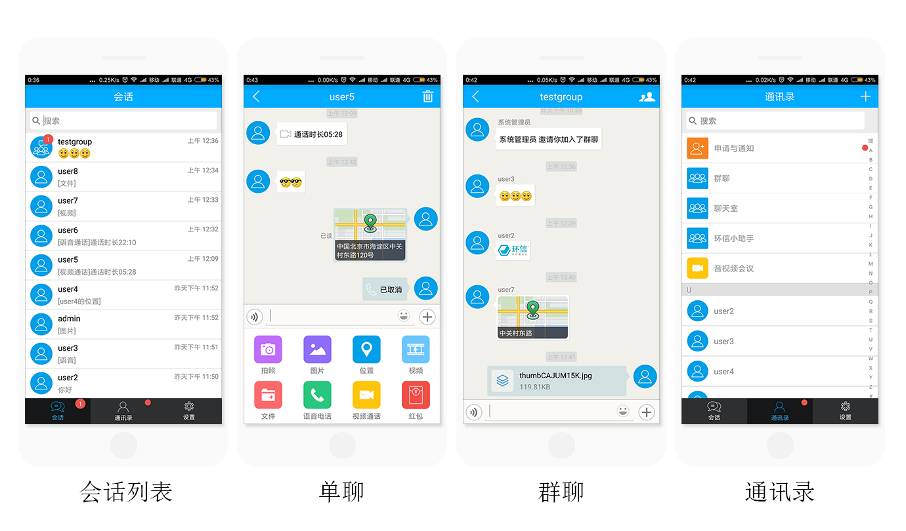
注册并创建应用
环信为管理者与开发者提供了方便易用的App工作台–环信管理后台。通过环信管理后台可以完成应用创建、服务购买、企业信息修改基础功能。同时，管理后台也提供了发送消息、用户管理、群组管理、聊天室管理和数据统计等管理监控功能。
注册环信账号
第 1 步：进入环信官网，选择“注册 > 注册即时通讯云”，进入环信管理后台的注册页面。
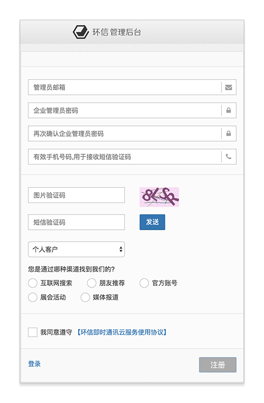
第 2 步：在注册页面中，首先填写邮箱、密码、电话、图片字符等信息，再点击【发送】按钮。我们会立刻向您的手机发送验证码。收到验证码后，请将其填写在验证码输入框内，选择所属类型、渠道、点击“同意”的选项框后，再点击“注册”按钮，即可完成注册。
注册成功后，我们会向您填写的邮箱中发送验证信息，请前往邮箱进行账号激活。如果未收到邮件，请到官网联系我们的客服。
创建应用
账号激活成功后，回到控制台登录页面登录到环信管理后台。
第 1 步：在我的应用中，点击创建应用按钮，如下图：

第 2 步：填写创建应用的名称（内容只限于数字、大小写字母），如下图：

（应用名称会存在于你生成的 AppKey 中，如：AppKey 为easemob-demo#chatdemo，则 chatdemo 为填写的应用名称。注册授权根据需要自行选择，AppKey的长度限制为1k字节以内。）
第 3 步：填写好应用名称后，点确定。创建成功，系统会为你生成 AppKey 以及相关配置信息，如下图：

| 名词 | 解释 |
|---|---|
| org_name | 企业的唯一标识，开发者在环信开发者管理后台注册账号时填写的企业 ID |
| app_name | 同一“企业”下“APP”唯一标识，开发者在环信开发者管理后台创建应用时填写的“应用名称” |
| org_admin | 开发者在环信开发者管理后台注册时填写的“用户名”，企业管理员拥有对该企业账号下所有资源的操作权限 |
| AppKey | 一个 APP 的唯一标识，规则是 ${org_name}#${app_name} |
入门
环信服务器端 REST 平台概述
关于 REST
REST（Representational State Transfer）是一种轻量级的 Web Service 架构风格，可以翻译成“表述性状态转移”，实现和操作明显比 SOAP 和 XML-RPC 更为简洁，可以完全通过 HTTP 协议实现，还可以利用缓存 Cache 来提高响应速度，性能、效率和易用性上都优于 SOAP 协议。
REST 架构遵循了 CRUD 原则，CRUD 原则对于资源只需要四种行为：Create（创建）、Read（读取）、Update（更新）和Delete（删除）就可以完成对其操作和处理。这四个操作是一种原子操作，对资源的操作包括获取、创建、修改和删除资源的操作正好对应 HTTP 协议提供的 GET、POST、PUT 和 DELETE 方法，因此 REST 把 HTTP 对一个 URL 资源的操作限制在 GET、POST、PUT 和 DELETE 这四个之内。这种针对网络应用的设计和开发方式，可以降低开发的复杂性，提高系统的可伸缩性。
更多 REST API 背景知识可以参考RESTful API 设计指南。
REST 平台体系
平台提供的是一个多租户用户体系，资源以集合（Collection）的形式来描述，这里所说的 Collection 包括 DataBase、企业（orgs）、应用（apps）、IM用户（users）、群组（chatgroups）、消息（chatmessages）、文件（chatfiles）等等，之间的包含关系是：
-
DB = {org1, org2, …}
-
org = {app1, app2, …}
-
app = {users, messages, chatfiles, chatmessages, chatgroups, …}
-
users = {user1, user2, …}
-
messages = {message1, message2, …}
-
chatfiles = {chatfile1, chatfile2, …}
-
chatmessages = {chatmessage1, chatmessage2, …}
-
chatgroups = {group1, group2, …}
多租户是指软件架构支持一个实例服务多个用户（Customer），每一个用户被称之为租户（Tenant），软件给予租户可以对系统进行部分定制的能力，如用户界面颜色或业务规则，但是他们不能定制修改软件的代码。
其实在云计算领域，多租户的含义已被扩展。例如，软件即服务（SaaS）提供者，利用运行在一个数据库实例上的应用系统，向多个用户提供Web访问服务。在这样的场景下，租户之间的数据是隔离的，并且保证每个用户的数据对其他租户不可见。
在环信服务体系中，不同org之间的用户数据相互隔离，同一个 org 下不同 APP 之间的用户数据相互隔离。
REST server
环信的服务器端接口都是通过REST服务方式提供的，REST API基于最简单的HTTP协议，在各个编程语言中都提供了良好的支持。
REST client
REST client 就是调用 REST API 的程序端，调用方式有多种：Linux curl、浏览器、编程语言 HTTP 请求访问实现等。
调用 REST API，本质就是发送 HTTP 请求，只不过大家常用的可能是 HTTP GET 和 HTTP POST 请求，但是在 REST 里面还经常用到 HTTP PUT 和 HTTP DELETE。在 REST 中，把这四种操作称之为动词，可以（但不是特别准确）想象成增删改查。
而动词所操作的对象，在 REST 中，被称之为“资源”，也就是 URL，而这些也都是标准的 HTTP 协议的内容。实际上，当我们在浏览器中打开一个网站的时候，例如，打开环信官网，浏览器实际上发送给网站服务器的，就是一个 HTTP GET 的请求。
需要注意的是，环信的 REST API 都是基于 JSON 的，所以在构造 HTTP 请求的时候，需要在 HTTP HEADER 中指明：
| Header_name | Header_value | Description |
|---|---|---|
| Accept | application/json | 服务器端返回给客户端的数据类型 |
| Content-Type | application/json | 客户端发送到服务器端的数据类型 |
Java
在 Java 中，REST client 实现方式有多种，比如 JBOss RestEasy、Sun Jersey、Dropwizard、Apache HTTPClient。我们推荐使用 Jersey 来调用环信的 REST 服务。
Jersy 2.x 实现了 JAX-RS 2.0 的规范，并且提供了异步的支持，但是 Jersey 2.x 需要 JDK 1.7 的支持，所以如果你的服务器端程序还没有办法使用 JDK 1.7，那么需要使用 Jersey 1.x 的版本。也有很多人直接使用 Apache Http Client，我们并不推荐直接使用这个库，主要是因为这个库相对比较底层，需要自己处理的东西很多，API 也相对繁琐。
Python
对于 Python 程序，我们推荐使用 Requests 这个类库来调用环信的 REST 服务。
环信服务器基本架构
当用户在环信开发者管理后台中注册的时候，需要填写一个“企业ID”，这是因为环信是一个支持多租户的云服务平台，并且环信是支持“企业”（或者理解成团队）-“APP”两级结构的。即，在环信平台中，每个企业 ID 之间的数据都是严格相互隔离的，而每个企业 ID 内部的每个 APP 之间的数据，也都是严格相互隔离的。
可以想象这样的模型：一个公司中有三个部门，每个部门负责一个 APP，那么这个公司可以注册一个环信的账号，然后在这个账号的名下创建三个（环信中的）APP，每个环信中的 APP 对应一个部门的 APP。
这样，最开始注册的时候的账号，是这个企业在环信中的企业管理员账号，企业管理员可以创建新的 APP，并创建其他企业管理员。在访问权限上，企业管理员拥有最高的权限，可以看到自己的企业 ID 下所有 APP 中的所有的数据。同时，上面也说过了，同一个企业 ID 下面的 APP 之间，数据也都是相互隔离的，所以完全可以在两个 APP 中创建相同用户名的用户。
另，如果只是个人开发者开发一个 APP 的话，那么企业 ID 可以随便填写，只需要不和环信现有的企业 ID 重复即可。
最后，因为环信提供的是 REST 服务，并且上面说过，REST 本质就是通过 GET/POST/PUT/DELETE 来操作资源（URL），所以，实际上可以看到在环信的 REST API 中，也体现了这种思想。
假设一个企业 ID 为 easemob-demo，然后这个企业下面有个 APP 名字叫做 chatdemoui，那么环信的 REST API 就是下面的样子：
获取这个 APP 下的所有用户
Path : /easemob-demo/chatdemoui/users
HTTP Method : GET
Request Headers : {
Authorization : Bearer ${token}
}
获取这个 APP 下的用户 stliu 的详情
Path : /easemob-demo/chatdemoui/users/stliu
HTTP Method : GET
Request Headers : {
Authorization : Bearer ${token}
}
在这个 APP 下创建一个新的用户
注意: POST的数据需要是JSON格式的，并设置Content-Type 为 application/json。
Path : /easemob-demo/chatdemoui/users
HTTP Method : POST
Request Headers : {
Content-Type : application/json,
Authorization : Bearer ${token}
}
Request Body : {"username":"stliu1", "password":"123456"}
删除一个用户
Path : /easemob-demo/chatdemoui/users/stliu
HTTP Method : DELETE
Request Headers : {
Authorization : Bearer ${token}
}
从上面的 URL 的规则中，也能够看出“企业”–“APP”–“用户”的层层递进的关系。
名词解释
安全
环信的 REST 服务完全是基于 HTTPS 的安全协议，从协议层面保证了在调用的时候，不会被别人窃取到。
环信的后台服务 API 在安全上，是基于 OAuth 2.0 标准的和 RBAC（基于角色的访问控制）的权限模型的。
在调用环信的后台服务之前，需要先登录获取 token，而根据请求发起人的角色不同，获取 token 的方式也不同。
关于 OAuth 2.0，可以参考理解OAuth 2.0。
示例代码
环信提供了如何调用 REST 服务的示例代码，可以在这里找到。
Android SDK 介绍及导入
Android SDK 介绍
环信 SDK 为用户开发 IM 相关的应用提供的一套完善的开发框架。包括以下几个部分：
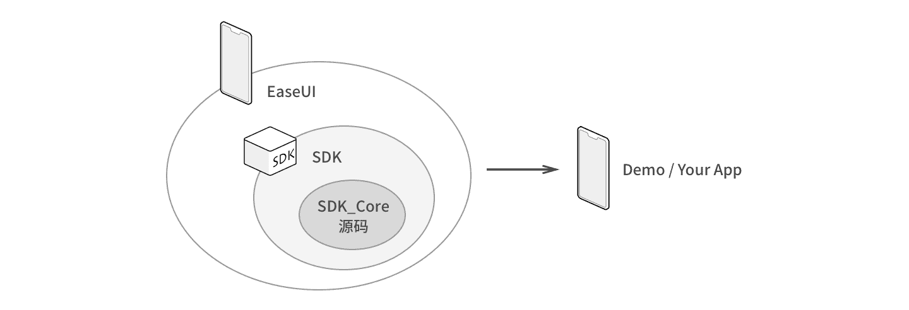
-
SDK_Core 为核心的消息同步协议实现，完成与服务器之间的信息交换。
-
SDK 是基于核心协议实现的完整的 IM 功能，实现了不同类型消息的收发、会话管理、群组、好友、聊天室等功能。
-
EaseUI 是一组 IM 相关的 UI 控件，旨在帮助开发者快速集成环信 SDK。
开发者可以基于 EaseUI 或者环信 SDK 开发自己的应用，前者因为把消息的发送接送等功能封装到了内部，集成时开发者不需要太关心消息是怎么发送、怎么接收等逻辑。请查阅EaseUI使用指南。
SDK 采用模块化设计，每一模块的功能相对独立和完善，用户可以根据自己的需求选择使用下面的模块：
{kind=link}
-
EMClient: SDK 的入口，主要完成登录、退出、连接管理等功能。也是获取其他模块的入口。
-
EMChatManager: 管理消息的收发，完成会话管理等功能。
-
EMContactManager: 负责好友的添加删除，黑名单的管理。
-
EMGroupManager: 负责群组的管理，创建、删除群组，管理群组成员等功能。
-
EMChatroomManager: 负责聊天室的管理。
注意：如果您是从 SDK2.x 升级到 3.0，可以参考环信 SDK2.x 到 3.0 升级文档。
视频教程
以下是SDK集成参考视频，您可以通过视频学习如何集成环信SDK。
-
Android_SDK集成：http://www.imgeek.org/video/44
Android SDK 导入
集成前准备
手动复制jar包及so导入
到环信官网下载环信 SDK。
考虑到开发者需求不一样，在下载的 SDK 中，提供了两个不同的 jar 包：
-
一个是 libs 下带实时语音功能和实时视频功能的 jar 包和 so 文件。
-
如果你不需要实时语音、实时视频功能，那就直接用 libs.without.audio 文件夹下的 jar 包及 so 文件。
集成 iOS SDK 前的准备工作
注册环信开发者账号并创建后台应用
详细操作步骤见开发者注册及管理后台。
制作并上传推送证书
如果不需要实现离线推送功能，请忽略这步。
制作推送证书
第 1 步：打开苹果开发者网站。
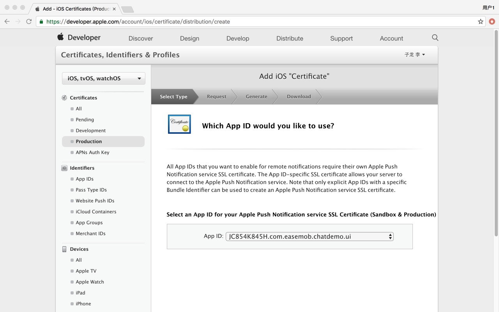
第 2 步：从 Account 进入 Certificates, Identifiers & Profiles。
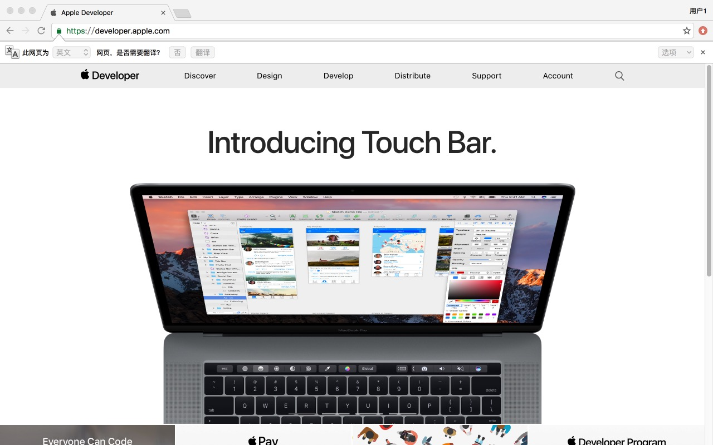
第 3 步：选择要制作的推送证书。
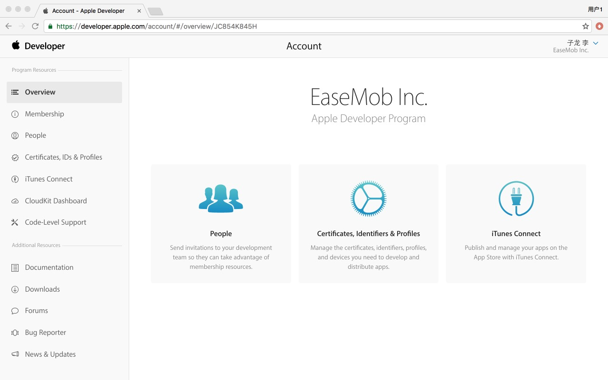
-
对于开发环境（sandbox）的推送证书，请选择 Apple Push Notification service SSL (Sandbox)
-
对于生产环境（production）的推送证书，请选择 Apple Push Notification service SSL (Sandbox & Production)
注意：环信暂时不支持Apple Push Notification Authentication Key (Sandbox & Production)
第 4 步：选择对应的 APP ID（环信示例使用 ChatDemoUI，所以此处选择 com.easemob.enterprise.demo.ui）。
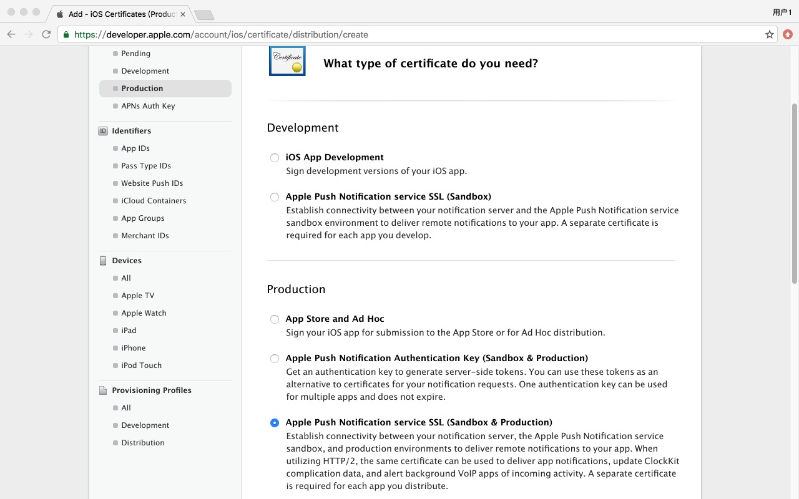
第 5 步：根据 Certificate Assistant 的提示，创建 Certificate Request。
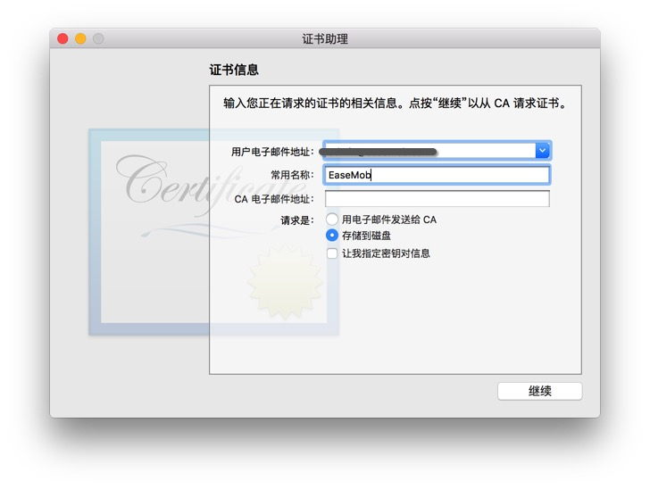
第 6 步：上传上一步中创建的 Certificate Request 文件。
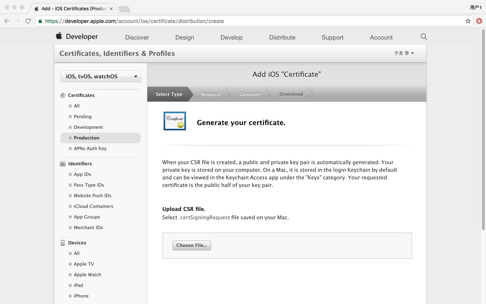
第 7 步：上传完毕后，推送证书就被正确生成了，之后我们下载下来这个证书，并双击导入系统。
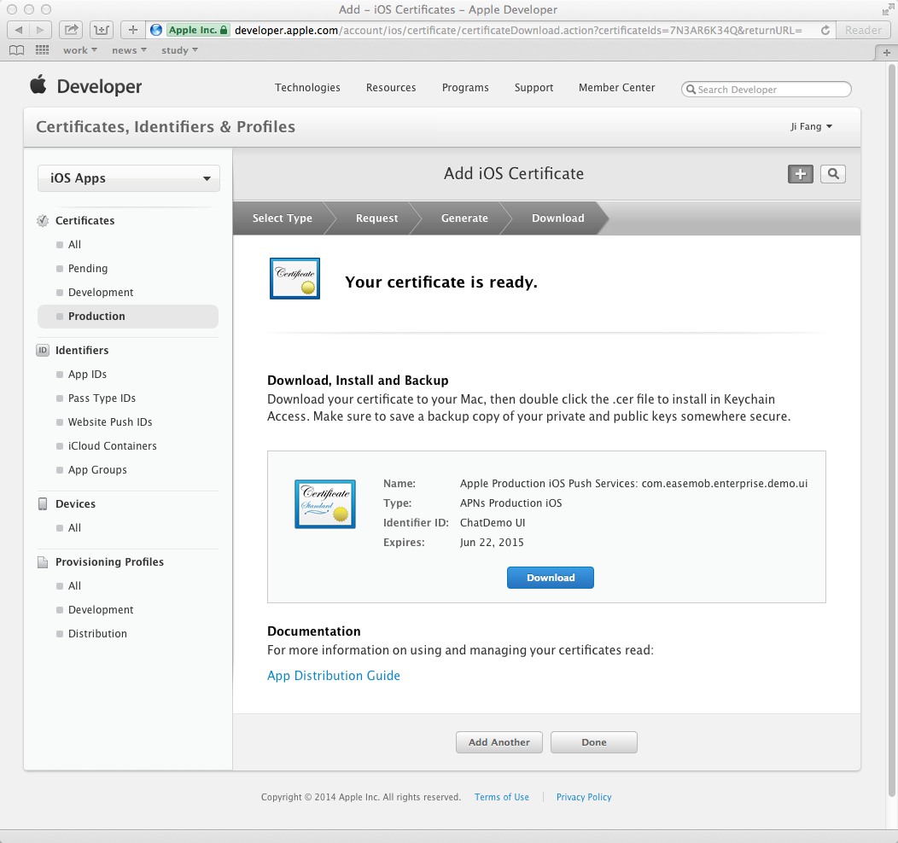
上传推送证书
第 1 步：打开 Application –> Utilities –> Keychain Access → Certificates 应用，我们会看到有刚刚我们制作好的推送证书。
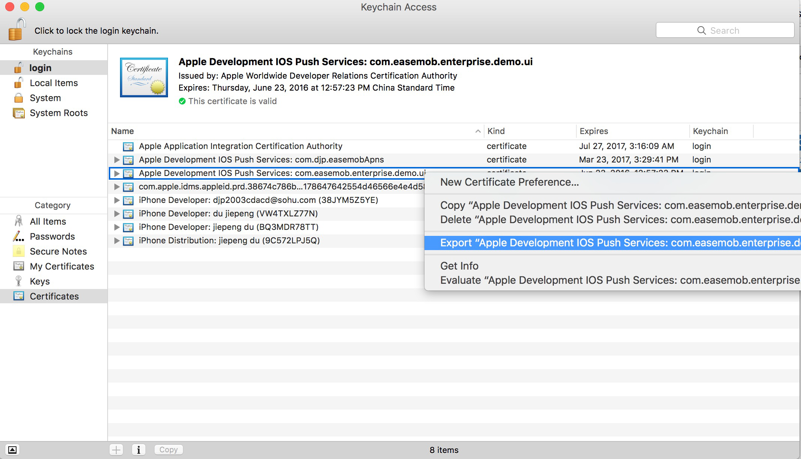
导出并保存为 P12 格式并设置密码。(本步导出证书使用的电脑务必与“第 5 步：创建 Certificate Request”时使用的是一台电脑。)
第 2 步：登录环信管理后台。
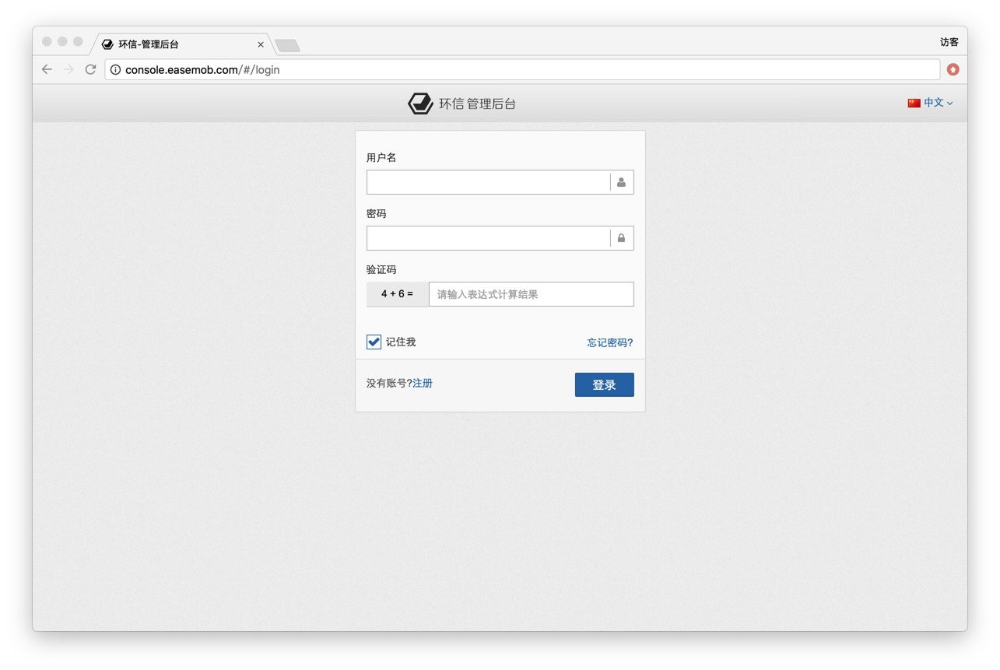
第 3 步：输入了正确的账号后，选择对应的 APP（环信示例为 ChatDemoUI，点击 ChatDemoUI）。
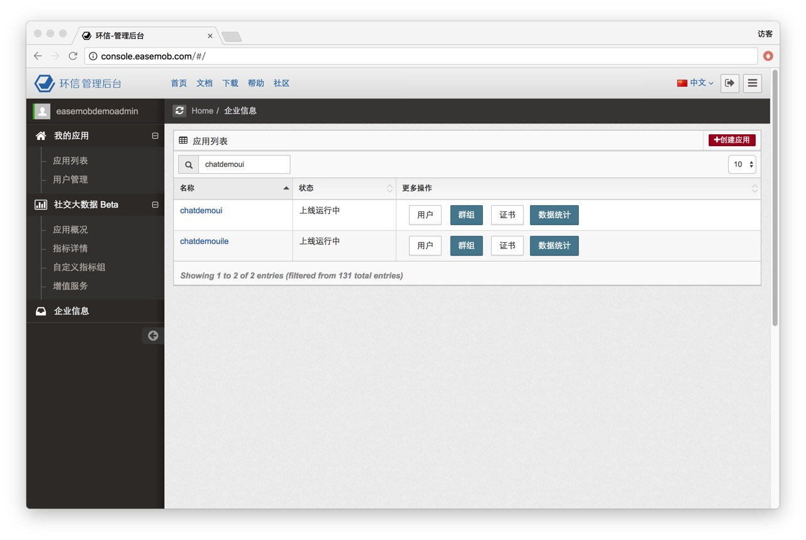
第 4 步：填写证书名称。
这个名称是个有意义的名字，对推送直接相关，稍后会在源码的修改里继续用到这个名字。上传之前导出的 P12 文件，密码则为此 P12 文件的密码，证书类型请根据具体情况选择。
（创建的是 Apple Push Notification service SSL Sandbox 请选择开发环境；Apple Push Notification service SSL Production 请选择生产环境。）
第 5 步：上传证书。
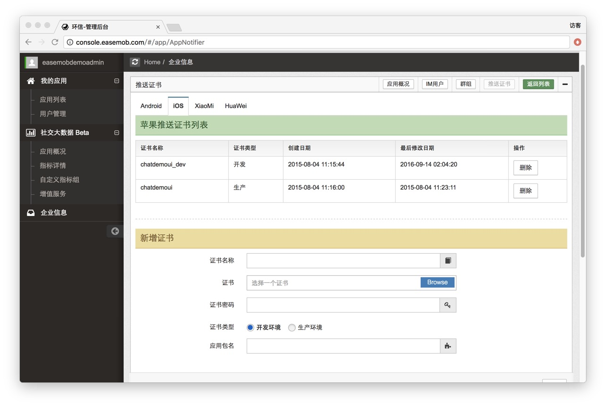
注意：请正确选择是生产环境还是测试环境的证书，应用包名指的是Bundle Id。
上一章节：Android客户端集成
下一页：iOS SDK 介绍及导入
Web IM 介绍
注意：
Web SDK 已更新至 V1.4.12 版本，从 V1.1.2 版本开始和 V1.1.1 差异较大，如果您是 Web SDK 的新用户，请参考本文档集成最新版本。如果您已集成 V1.1.1，并希望再次了解其集成方式，可参考Web SDK V1.1.1 集成说明。 新版的sdk保证兼容旧版sdk的所有接口，同时提供了一些新的接口，所以新版的sdk可以直接替换旧版的sdk，您可以根据自己的实际情况选择是否需要使用最新的接口，建议使用最新版本的接口。
什么是环信 Web IM Demo
环信 Web IM Demo 展示了怎样使用环信 Web IM SDK 快速创建一个完整的类似微信的网页聊天示例。展示的功能包括：
-
登录、登出、操作好友、收发个人消息/群组消息等
-
分页查看公开群，根据id搜索公开群
-
好友之间可以通过webrtc进行视频聊天（仅支持 https + Webkit浏览器）
-
支持同一账号最多8个标签页登录（
isMultiLoginSessions:true） -
http访问加入ip策略功能，防止DNS劫持（
isHttpDNS:true）
环信 Web IM 源代码已在 GitHub 上开源供开发者下载 https://github.com/easemob/web-im，以帮助开发者更好的学习了解环信 SDK。
Demo使用react框架，支持IE9+、Chrome54+、Firefox等高级浏览器。SDK支持IE8+。聊天室功能支持IE10+。视频通话功能只支持https+Webkit浏览器。
Web IM Demo 及 SDK 目录简要说明：
-
demo：demo相关静态资源文件。包括脚本、样式、语言包、Appkey配置文件（/demo/javascript/dist/webim.config.js）等
-
sdk：WebIM SDK
-
package.json: 构建环境依赖文件。需要安装npm环境，终端执行sudo npm intall等待安装完成
-
webpack.config.js: webpack配置文件
-
demo/stylesheet/src/font/demo.html: Demo中可以用到的图标示例
Web IM 功能演示
点击http://webim.easemob.com 对 Web IM 进行体验，账号为环信Demo的账号（与 Android、iOS 的 Demo 账号相同）。
使用 Web IM Demo 与好友进行视频聊天的操作说明：Web IM Demo视频聊天使用说明
Web IM 功能说明
Easemob Web IM SDK 已支持如下功能：
-
SDK 本身已支持 IE9+、FireFox10+、Chrome54+、Safari6+ 之间文本、表情、图片、音频、地址消息相互发送。
-
SDK 支持 Web 端之间，Web 端与 Android/iOS端相互添加、删除好友功能。
-
SDK 支持与iOS、Android SDK 之间相互发送文本、表情、图片、音频、地址消息。
-
SDK 对于消息的处理方式如下：
-
文本、表情消息，直接发送、接收。
-
附件消息（图片、音频、文件等），SDK上传附件到服务器，然后发送附件基本信息（发送方上传的附件URL、文件名等），接收方根据附件的URL、secret和自身的登录信息，以流的形式从服务器上下载到本地处理。
-
-
提供Demo，方便大家参考，已实现聊天添加/删除好友/群组功能。备注：
-
Demo默认支持的图片消息格式：PNG、JPG、BMP、GIF
-
Demo默认支持的音频消息格式：MP3、AMR、WMV
-
Demo默认支持的文件消息格式：zip、txt、doc、PDF
-
搭建本地测试环境
搭建环境之前需要对环信提供的参考文档有个初步的了解，大致分下面三种形式，请根据下面的关键字选择一个或多个源码参考
-
简单版 简化版的demo，关键字：纯html+js，接口清晰
-
完整版 基于react开发的完整的实时demo，关键字：至少IE9，完整流程，webpack+react
-
IE8版 基于IE8准备的特殊demo，关键字：IE8
简单版
1. 首先将本源码克隆到本地
$ git clone https://github.com/easemob/web-im.git
2. 直接双击打开或者浏览器访问 sdk/demo.html 均可
完整版
1. 首先将本源码克隆到本地
$ git clone https://github.com/easemob/web-im.git
2. 去官网安装NodeJS，建议4+
-
因为整套代码需要依赖于npm NodeJS的包管理工具，安装NodeJS会默认安装NPM工具
3. 定位到web-im目录 在终端执行下面的命令，安装测试所需要的依赖模块
-
保证此过程没有error终止为成功，如果有错误中断，请保留错误日志并再次尝试，大多数情况是网络原因导致的无法连接而中断
npm i
4. 上述步骤成功后
# 启动测试环境
npm run dev
# 打包发布，发布后文件在 web-im/publish 目录下
npm run prod
5. 浏览器访问即可看到测试页面：http://localhost:3000/
IE8版
1. 首先将本源码克隆到本地
$ git clone https://github.com/wytheme/webim-ie8
2. 直接双击打开或者浏览器访问 demo.html 均可
3. 如果浏览器IE8且需要使用上传功能，比如发送图片之类，继续下面的流程。需要以web服务器访问对应的源码
-
Mac下建议安装xmpp、 Windows下建议安装xampp 软件
4. 已安装对应的软件，请将服务器跟目录设置到 web-im，设置之后启动服务 访问 demo.html
常见问题
参考：环信知识库
还有疑问，不知如何处理？
1. 去工单系统提问题
2. 工单描述应该包括并不仅限于以下信息
-
您的页面访问地址？
-
提供一下您的webim.config.js中的apiUrl、xmppUrl、appKey和您的测试登录账号密码？
-
您的页面的连接是否正常建立，onOpen 的监听操作是否触发？
-
提供一下所有控制台的日志信息（如何开启控制台见下图）
开启控制台 以Chrome为例
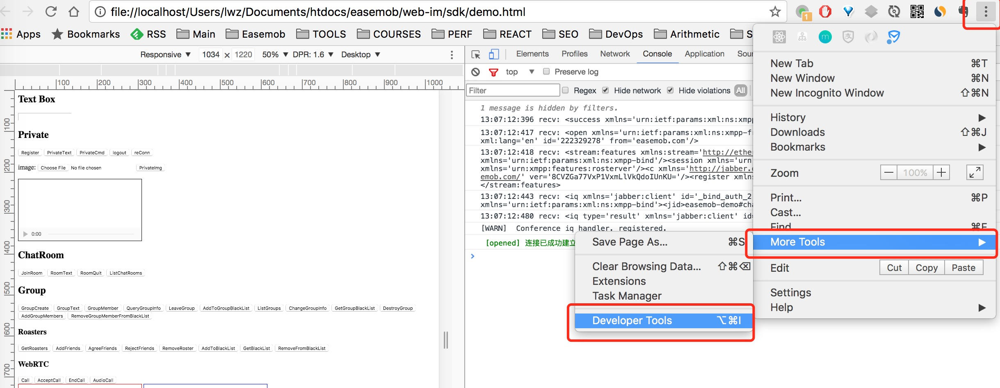
上一章节：Linux SDK集成
下一页：集成方式
微信小程序介绍
环信小程序 SDK 为小程序开发提供一套完整的技术解决方案，在微信小程序的开发环境下，集成 IM 相关的功能更加便捷、高效。扫描下方小程序二维码或者微信二维码可以快速体验环信小程序在线版本。
体验版微信小程序，仅包含部分 IM 的常用功能，添加注册后可以立即体验，如需查看具体功能开发请查看
功能说明
环信微信小程序 WebIM 在微信生态系统进行优化，功能与微信对接更为流畅：
-
支持账户注册登录
-
支持 IM 基本功能收发文本、图片、语音、视频、音频、文件、穿透、扩展消息等
-
支持客户端与服务端的上下行消息
-
支持部分群功能
-
支持个人设置
开发者集成
集成前准备
安装 IDE 微信开发者工具
进入微信公众平台的官网下载“开发者工具”，并安装。目前支持 windows 64、windows 32、mac 版本。
配置服务器地址
登录微信小程序账户，进入“设置 > 开发设置”页面，配置以下服务器地址：
-
request合法域名 https://a1.easemob.com
-
socket合法域名 wss://im-api.easemob.com
-
uploadFile合法域名 https://a1.easemob.com
将微信小程序 SDK 添加到项目
全新开发，将源码包中 src/sdk 目录下的内容导入进自己的项目包中即可集成使用。如果是基于环信小程序二次开发，可直接将源码导入使用，步骤如下：
-
打开“微信开发者工具”，使用微信扫一扫授权登录。
-
选择“本地小程序项目 → 添加项目”。
-
填写AppID、项目名称（可自定义）、项目目录（本地代码路径），并点击“添加项目”。
集成调试
可以通过使用服务端与客户端接口对客户端进行调试。
发布小程序
调试成功后，可通过微信后台直接发布自己的小程序应用。
小程序 SDK API 文档
当前小程序文档可参考 WebIM API DOC
Windows SDK 集成说明
Windows SDK 是为在微软Windows操作系统中集成 IM 功能提供的 SDK。使用C++语言开发，编译器需支持C++11。用户可以用 SDK 实现 IM 功能。目前支持登录、注册、单聊、群聊、聊天室、文本消息、图片、语音、位置等消息以及透传消息，还可以实现好友管理、群组管理等功能。未实现语音通话和视频通话功能。
集成准备
从环信官方网站获取 IM Windows SDK，SDK中目录结构如下：
|-include
|-bin
|-lib
|-doc
release 目录中包含SDK的头文件、lib文件和dll文件，其中easemob_d.lib和easemob_d.dll是Debug版，easemob.pdb是SDK的调试符号文件，libcurl.dll是libcurl库二进制文件。doc 目录包含对 sdk 的详细说明。
集成示例
创建 EMClient
EMClient 是 IM 服务的入口，可以直接调用 EMClient 的接口，也可以通过 EMClient 获得相应 EMContactManager、EMChatManager 等进行相应的操作。
void CreateEMClient()
{
if (g_client == NULL)
{
CString strAppDir = GetAppDataPath() + L"\\EasemobDemo";
CefString sAppDir(strAppDir);
CreateDirectory(strAppDir, NULL);
easemob::EMChatConfigsPtr configs(new easemob::EMChatConfigs(sAppDir, sAppDir, "easemob-demo#chatdemoui"));
configs->setOs(EMChatConfigs::OS_MSWIN);
configs->setEnableConsoleLog(true);
configs->setAutoAcceptGroup(false);
configs->setClientResource("windows");
configs->setLogLevel(EMChatConfigs::DEBUG_LEVEL);
EMClient *client = EMClient::create(configs);
g_client = client;
mChatListener = new ChatListener();
g_client->getChatManager().addListener(mChatListener);
mContactListener = new ContactListener();
g_client->getContactManager().registerContactListener(mContactListener);
mConnectionListener = new ConnectionListener();
g_client->addConnectionListener(mConnectionListener);
mGroupManagerListener = new GroupManagerListener();
g_client->getGroupManager().addListener(mGroupManagerListener);
}
}
注册、登录及登出
调用 chatclient 的 createAccount()、login()、logout() 接口可以实现注册、登录、登出功能。
注册的示例：
easemob::EMErrorPtr result = chatClient->createAccount("zhangsan", "passw0rd");
if(result->mErrorCode == EMError::NO_ERROR) {
//注册成功
} else {
//注册失败提示错误描述
cout << result->mDescription << endl;
}
登录的示例 ：
CreateEMClient();
...
...
easemob::EMErrorPtr result = chatClient->login("zhangsan", "passw0rd");
if(result->mErrorCode == EMError::NO_ERROR) {
//登录成功
} else {
//登录失败提示错误描述
cout << result->mDescription << endl;
}
登出的示例：
g_client->logout();
...
...
g_client->getChatManager().removeListener(mChatListener);
g_client->getContactManager().removeContactListener(mContactListener);
g_client->removeConnectionListener(mConnectionListener);
g_client->getGroupManager().removeListener(mGroupManagerListener);
g_client->logout();
delete mConnectionListener;
mConnectionListener = NULL;
delete mContactListener;
mContactListener = NULL;
delete mChatListener;
mChatListener = NULL;
delete mGroupManagerListener;
mGroupManagerListener = NULL;
delete g_client;
g_client = NULL;
注意：createAccount(), login() 是需要与后台服务器通讯的操作，可能需要一定时间，如果程序想同时显示 UI 的话，需要放在单独线程中处理。
注册连接状态监听
当掉线时，SDK 会自动重连，无需进行任何操作，通过注册连接监听来知道连接状态。
-
在聊天过程中难免会遇到网络问题，在此 SDK 为您提供了网络监听接口，实时监听。
-
可以根据 disconnect 返回的 error 判断原因。若服务器返回的参数值为
EMError.USER_LOGIN_ANOTHER_DEVICE，则认为是有同一个账号异地登录；若服务器返回的参数值为EMError.USER_REMOVED，则是账号在后台被删除。
class ConnectionListener : public EMConnectionListener {
public:
ConnectionListener()
{
}
virtual void onDisconnect(EMErrorPtr error);
virtual void onConnect();
};
...
...
mConnectionListener = new ConnectionListener();
g_client->addConnectionListener(mConnectionListener);
集成 iOS SDK 前的准备工作
注册环信开发者账号并创建后台应用
详细操作步骤见开发者注册及管理后台。
制作并上传推送证书
如果不需要实现离线推送功能，请忽略这步。
制作推送证书
第 1 步：打开苹果开发者网站。
第 2 步：从 Account 进入 Certificates, Identifiers & Profiles。
第 3 步：选择要制作的推送证书。
-
对于开发环境（sandbox）的推送证书，请选择 Apple Push Notification service SSL (Sandbox)
-
对于生产环境（production）的推送证书，请选择 Apple Push Notification service SSL (Sandbox & Production)
注意：环信暂时不支持Apple Push Notification Authentication Key (Sandbox & Production)
第 4 步：选择对应的 APP ID（环信示例使用 ChatDemoUI，所以此处选择 com.easemob.enterprise.demo.ui）。
第 5 步：根据 Certificate Assistant 的提示，创建 Certificate Request。
第 6 步：上传上一步中创建的 Certificate Request 文件。
第 7 步：上传完毕后，推送证书就被正确生成了，之后我们下载下来这个证书，并双击导入系统。
上传推送证书
第 1 步：打开 Application –> Utilities –> Keychain Access → Certificates 应用，我们会看到有刚刚我们制作好的推送证书。
导出并保存为 P12 格式并设置密码。(本步导出证书使用的电脑务必与“第 5 步：创建 Certificate Request”时使用的是一台电脑。)
第 2 步：登录环信管理后台。
第 3 步：输入了正确的账号后，选择对应的 APP（环信示例为 ChatDemoUI，点击 ChatDemoUI）。
第 4 步：填写证书名称。
这个名称是个有意义的名字，对推送直接相关，稍后会在源码的修改里继续用到这个名字。上传之前导出的 P12 文件，密码则为此 P12 文件的密码，证书类型请根据具体情况选择。
（创建的是 Apple Push Notification service SSL Sandbox 请选择开发环境；Apple Push Notification service SSL Production 请选择生产环境。）
第 5 步：上传证书。
注意：请正确选择是生产环境还是测试环境的证书，应用包名指的是Bundle Id。
上一章节：Android客户端集成
下一页：iOS SDK 介绍及导入
微信小程序介绍
环信小程序 SDK 为小程序开发提供一套完整的技术解决方案，在微信小程序的开发环境下，集成 IM 相关的功能更加便捷、高效。扫描下方小程序二维码或者微信二维码可以快速体验环信小程序在线版本。
体验版微信小程序，仅包含部分 IM 的常用功能，添加注册后可以立即体验，如需查看具体功能开发请查看
功能说明
环信微信小程序 WebIM 在微信生态系统进行优化，功能与微信对接更为流畅：
-
支持账户注册登录
-
支持 IM 基本功能收发文本、图片、语音、视频、音频、文件、穿透、扩展消息等
-
支持客户端与服务端的上下行消息
-
支持部分群功能
-
支持个人设置
开发者集成
集成前准备
安装 IDE 微信开发者工具
进入微信公众平台的官网下载“开发者工具”，并安装。目前支持 windows 64、windows 32、mac 版本。
配置服务器地址
登录微信小程序账户，进入“设置 > 开发设置”页面，配置以下服务器地址：
-
request合法域名 https://a1.easemob.com
-
socket合法域名 wss://im-api.easemob.com
-
uploadFile合法域名 https://a1.easemob.com
将微信小程序 SDK 添加到项目
全新开发，将源码包中 src/sdk 目录下的内容导入进自己的项目包中即可集成使用。如果是基于环信小程序二次开发，可直接将源码导入使用，步骤如下：
-
打开“微信开发者工具”，使用微信扫一扫授权登录。
-
选择“本地小程序项目 → 添加项目”。
-
填写AppID、项目名称（可自定义）、项目目录（本地代码路径），并点击“添加项目”。
集成调试
可以通过使用服务端与客户端接口对客户端进行调试。
发布小程序
调试成功后，可通过微信后台直接发布自己的小程序应用。
小程序 SDK API 文档
当前小程序文档可参考 WebIM API DOC
集成 iOS SDK 前的准备工作
注册环信开发者账号并创建后台应用
详细操作步骤见开发者注册及管理后台。
制作并上传推送证书
如果不需要实现离线推送功能，请忽略这步。
制作推送证书
第 1 步：打开苹果开发者网站。
第 2 步：从 Account 进入 Certificates, Identifiers & Profiles。
第 3 步：选择要制作的推送证书。
-
对于开发环境（sandbox）的推送证书，请选择 Apple Push Notification service SSL (Sandbox)
-
对于生产环境（production）的推送证书，请选择 Apple Push Notification service SSL (Sandbox & Production)
注意：环信暂时不支持Apple Push Notification Authentication Key (Sandbox & Production)
第 4 步：选择对应的 APP ID（环信示例使用 ChatDemoUI，所以此处选择 com.easemob.enterprise.demo.ui）。
第 5 步：根据 Certificate Assistant 的提示，创建 Certificate Request。
第 6 步：上传上一步中创建的 Certificate Request 文件。
第 7 步：上传完毕后，推送证书就被正确生成了，之后我们下载下来这个证书，并双击导入系统。
上传推送证书
第 1 步：打开 Application –> Utilities –> Keychain Access → Certificates 应用，我们会看到有刚刚我们制作好的推送证书。
导出并保存为 P12 格式并设置密码。(本步导出证书使用的电脑务必与“第 5 步：创建 Certificate Request”时使用的是一台电脑。)
第 2 步：登录环信管理后台。
第 3 步：输入了正确的账号后，选择对应的 APP（环信示例为 ChatDemoUI，点击 ChatDemoUI）。
第 4 步：填写证书名称。
这个名称是个有意义的名字，对推送直接相关，稍后会在源码的修改里继续用到这个名字。上传之前导出的 P12 文件，密码则为此 P12 文件的密码，证书类型请根据具体情况选择。
（创建的是 Apple Push Notification service SSL Sandbox 请选择开发环境；Apple Push Notification service SSL Production 请选择生产环境。）
第 5 步：上传证书。
注意：请正确选择是生产环境还是测试环境的证书，应用包名指的是Bundle Id。
上一章节：Android客户端集成
下一页：iOS SDK 介绍及导入
微信小程序介绍
环信小程序 SDK 为小程序开发提供一套完整的技术解决方案，在微信小程序的开发环境下，集成 IM 相关的功能更加便捷、高效。扫描下方小程序二维码或者微信二维码可以快速体验环信小程序在线版本。
体验版微信小程序，仅包含部分 IM 的常用功能，添加注册后可以立即体验，如需查看具体功能开发请查看
功能说明
环信微信小程序 WebIM 在微信生态系统进行优化，功能与微信对接更为流畅：
-
支持账户注册登录
-
支持 IM 基本功能收发文本、图片、语音、视频、音频、文件、穿透、扩展消息等
-
支持客户端与服务端的上下行消息
-
支持部分群功能
-
支持个人设置
开发者集成
集成前准备
安装 IDE 微信开发者工具
进入微信公众平台的官网下载“开发者工具”，并安装。目前支持 windows 64、windows 32、mac 版本。
配置服务器地址
登录微信小程序账户，进入“设置 > 开发设置”页面，配置以下服务器地址：
-
request合法域名 https://a1.easemob.com
-
socket合法域名 wss://im-api.easemob.com
-
uploadFile合法域名 https://a1.easemob.com
将微信小程序 SDK 添加到项目
全新开发，将源码包中 src/sdk 目录下的内容导入进自己的项目包中即可集成使用。如果是基于环信小程序二次开发，可直接将源码导入使用，步骤如下：
-
打开“微信开发者工具”，使用微信扫一扫授权登录。
-
选择“本地小程序项目 → 添加项目”。
-
填写AppID、项目名称（可自定义）、项目目录（本地代码路径），并点击“添加项目”。
集成调试
可以通过使用服务端与客户端接口对客户端进行调试。
发布小程序
调试成功后，可通过微信后台直接发布自己的小程序应用。
小程序 SDK API 文档
当前小程序文档可参考 WebIM API DOC
微信小程序介绍
环信小程序 SDK 为小程序开发提供一套完整的技术解决方案，在微信小程序的开发环境下，集成 IM 相关的功能更加便捷、高效。扫描下方小程序二维码或者微信二维码可以快速体验环信小程序在线版本。
体验版微信小程序，仅包含部分 IM 的常用功能，添加注册后可以立即体验，如需查看具体功能开发请查看
功能说明
环信微信小程序 WebIM 在微信生态系统进行优化，功能与微信对接更为流畅：
-
支持账户注册登录
-
支持 IM 基本功能收发文本、图片、语音、视频、音频、文件、穿透、扩展消息等
-
支持客户端与服务端的上下行消息
-
支持部分群功能
-
支持个人设置
开发者集成
集成前准备
安装 IDE 微信开发者工具
进入微信公众平台的官网下载“开发者工具”，并安装。目前支持 windows 64、windows 32、mac 版本。
配置服务器地址
登录微信小程序账户，进入“设置 > 开发设置”页面，配置以下服务器地址：
-
request合法域名 https://a1.easemob.com
-
socket合法域名 wss://im-api.easemob.com
-
uploadFile合法域名 https://a1.easemob.com
将微信小程序 SDK 添加到项目
全新开发，将源码包中 src/sdk 目录下的内容导入进自己的项目包中即可集成使用。如果是基于环信小程序二次开发，可直接将源码导入使用，步骤如下：
-
打开“微信开发者工具”，使用微信扫一扫授权登录。
-
选择“本地小程序项目 → 添加项目”。
-
填写AppID、项目名称（可自定义）、项目目录（本地代码路径），并点击“添加项目”。
集成调试
可以通过使用服务端与客户端接口对客户端进行调试。
发布小程序
调试成功后，可通过微信后台直接发布自己的小程序应用。
小程序 SDK API 文档
当前小程序文档可参考 WebIM API DOC